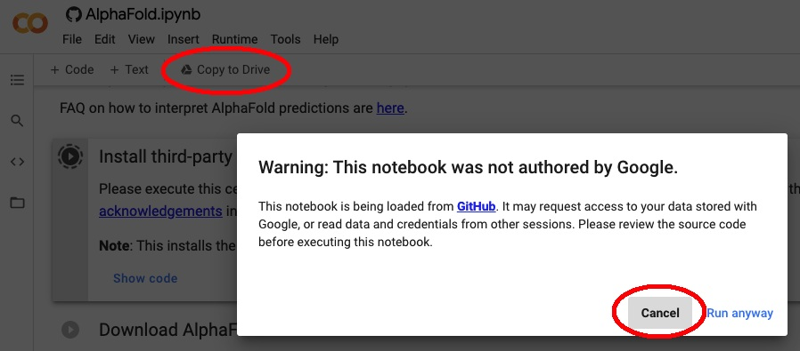
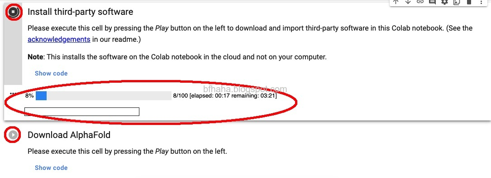
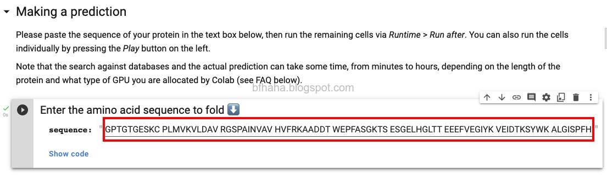
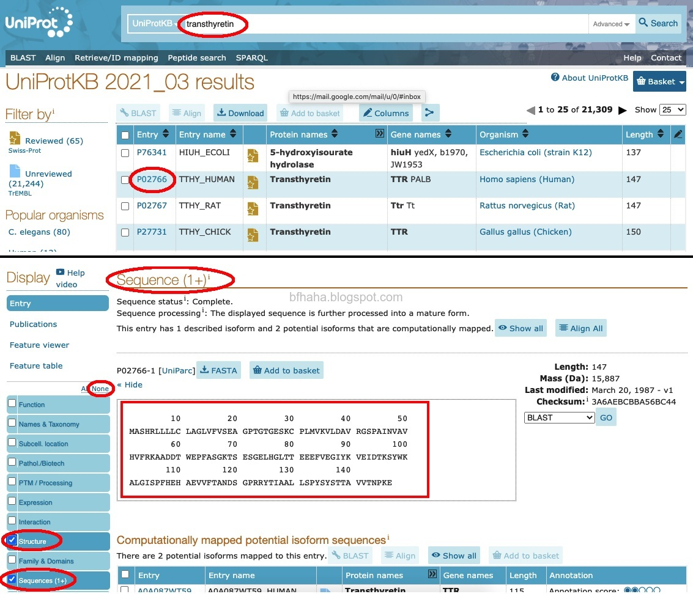
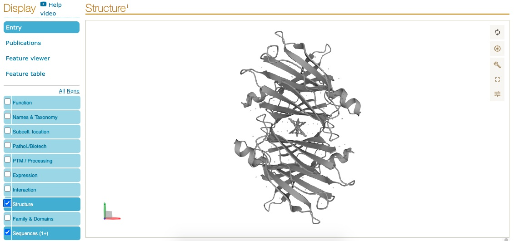
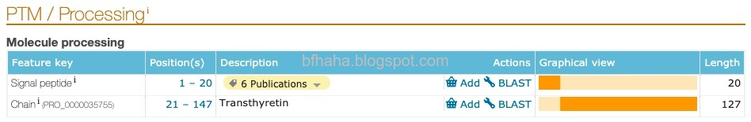
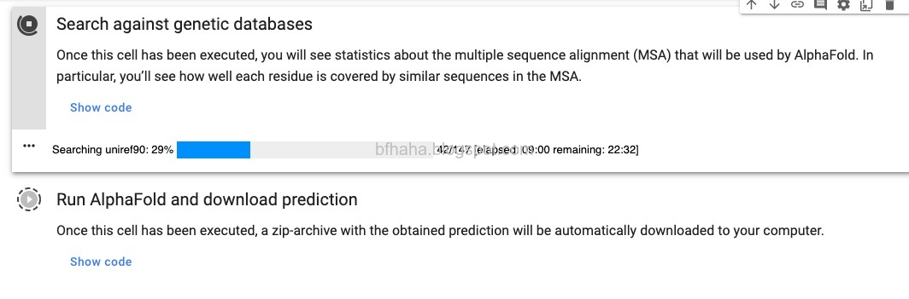
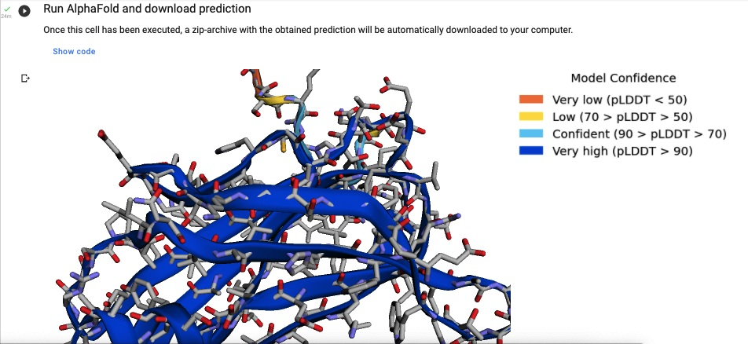

AlphaFold簡化版教學
AlphaFold是Google DeepMind出的預測胺基酸如何組合出蛋白質（Protein Folding Problem）的演算法，官方原始碼參考GitHub這裡，因為這個演算法對硬體的要求很高，所以原始碼的介紹中有提供一個可以在Google Colab執行的簡化版本，本文在介紹這個簡化版本的執行。
其實也很簡單，就是依序執行這個Google Colab notebook中的各個指令就好，下面只是提供一些額外的說明。
- 首先，這個notebook是公開版本，不允許私人編輯，所以執行的話會出現下面的訊息，我們按取消，並點選[Copy to Drive]，複製到自己的Google Drive來執行。

- 再來就是安裝及下載，點選執行按鈕即可，下面會顯示進度。

- 接著要輸入protein的amino acid sequence，原本已經有提供一個範例了，但我們改用Campbell Biology課本中的範例（Figure 5.18），這個protein叫做transthyretin。
GPTGTGESKC PLMVKVLDAV RGSPAINVAV HVFRKAADDT WEPFASGKTS ESGELHGLTT EEEFVEGIYK VEIDTKSYWK ALGISPFHEH AEVVFTANDS GPRRYTIAAL LSPYSYSTTA VVTNPKE

如果讀者想要知道其他protein的amino acid sequence，我推薦UniProt這個網站，輸入protein的名稱（例如collagen或是hemoglobin），找到想要查詢的protein（同名的protein可能有好幾個），進到protein的資訊頁後即可在[Sequences]找到。左邊可以篩選顯示的資訊，否則太多資訊很雜亂。

[Structure]也會顯示protein的結構，可惜不是彩色的。

注意到，課本給的amino acid sequence有127個amino acid，而UniProt給出的則有147個amino acid，最前面多出了20個amino acid，這20個amino acid是truncation signal(127 a.a. after the truncation of signal sequence from 147 a.a.)，參考這篇論文，在UniProt的[PTM / Processing]也有簡要的說明。注意，課本給的amino acid sequence只構成一個polypeptide，而transthyretin則是由四個一樣的這個polypeptide所組成。

回到Google Colab，接著搜尋資料庫及預測，這要花一點時間，筆者的範例中，這兩個步驟花了一個小時才完成。

執行完就可以看到預測的結果，在模型上用左鍵拖曳就可以旋轉，滾輪可以放大或縮小模型。
